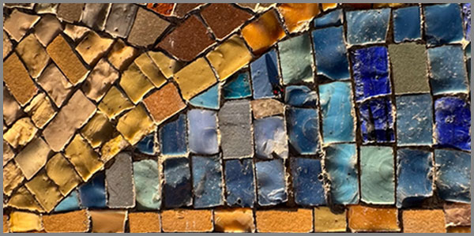

13. Աշխարհի Պակասող Մասը
 |
Կա մի շարժում, որն այնքան նուրբ է, որ աչքը չի բռնում այն, բայց սիրտը զգում է: Այն չի խախտում օդի հոսքը, չի փոխում լույսի ուղղությունը, չի թողնում ստվեր, որով կարելի է չափել: Այն նման է մտքի, որ ծնվում է լռության մեջ և սպառում է իրեն նախքան բառ դառնալը: Այն կա, բայց ապացուցել հնարավոր չէ:
Երբեմն բարությունն անցնում է այնպես, ինչպես քամին անցնում է բաց դաշտով՝ առանց հետք թողնելու, առանց անուն պահանջելու, առանց հարցնելու, թե ով է տեսել: Այն գալիս է, երբ չես սպասում, և հեռանում է, երբ փորձում ես բռնել: Մնում է միայն մի թեթև շարժում օդում, մի զգացողություն, որ ինչ-որ բան եղավ, բայց հստակ չես կարող ասել, թե ինչ:
Դա շարժում է: Շարժում որ չի երևում, չի ցնցում օդը, չի բարձրացնում փոշին, չի թողնում հետքեր, որոնք կարելի է չափել: Այն նման է շնչառությանը, որը մենք նկատում ենք միայն այն ժամանակ, երբ կանգ ենք առնում և ուշադրություն դարձնում: Այդ շարժումը ձեռք է, որ մեկնվում է, երբ ոչ ոք չի տեսնում, լեզու է, որ գտնում է ճիշտ բառը, երբ բոլոր բառերը կարծես սխալ են, լռություն է, որ նստում է կողքիդ և թույլ է տալիս, որ ցավդ արտահոսի առանց դատողության:
Բարությունը չի գոռում, բայց լսվում է այնտեղ, որտեղ ոչ մի ձայն չի հասնում:
Բարություն, որը չի գոռում
Աշխարհը կառուցված է տեսանելի կապերի և աղմկոտ պատճառահետևանքային շղթաների վրա։ Մենք սովոր ենք հաջողությունը չափել արդյունքով, իսկ ուժը՝ դիմադրությամբ։ Սակայն գոյություն ունի մի իմաստային դեֆիցիտ, մի դատարկություն, որը չի լրացվում ո՛չ գիտելիքով, ո՛չ էլ տրամաբանությամբ։ Դա հենց այն պակասող մասն է, որի բացակայությունը համակարգը դարձնում է կատարյալ, բայց մեռյալ։
Մենք սովոր ենք բարությունը տեսնել զոհողության մեջ, բայց իրական բարությունը հաճախ ինտելեկտուալ զսպվածություն է։ Դա այն պահն է, երբ դու տիրապետում ես ճշմարտությանը, որը կարող է փշրել դիմացինիդ պատրանքները, բայց ընտրում ես լռությունը՝ ոչ թե ստելու, այլ նրա ներքին աշխարհի ամբողջականությունը չխաթարելու համար։
Իրական բարությունը այդ դատարկության ինտելեկտուալ լրացումն է։ Այն չի գոռում, որովհետև նրա գործառույթը ոչ թե ուշադրություն գրավելն է, այլ կառուցվածքի ամբողջականությունը պահելը։ Այն նման է լռակյաց ճարտարապետի, ով շենքի հիմքում դնում է մի տարր, որը երբեք չի երևալու, բայց առանց որի ամբողջ շինությունը կփլվի սեփական ծանրության տակ։
Դա բարություն է, որը գործում է որպես իմաստային ամորտիզացիա։ Երբ երկու մարդու միջև երկխոսությունը հասնում է այն կետին, որտեղ բառերը դառնում են զենք, բարությունը հայտնվում է որպես մի «դատարկ տարածություն», որը կլանում է այդ հարվածները։ Այն չի հակադարձում, այն պարզապես թույլ չի տալիս, որ ցավի շղթայական ռեակցիան շարունակվի։
Մարդկային փոխհարաբերություններում սա արտահայտվում է որպես էնտրոպիայի կասեցում։ Երբ քաոսը, ագրեսիան կամ անտարբերությունը հասնում են իրենց գագաթնակետին, բարությունը հանդես է գալիս որպես միակ «անտրամաբանական» գործողությունը, որը չի պատասխանում հարվածին հարվածով։ Դա գիտակցված զսպվածություն է՝ թույլ չտալ, որ աշխարհի սառնությունը անցնի քո միջով և բազմապատկվի։ Սա ոչ թե միամտություն է, այլ բարձրագույն ստրատեգիական ընտրություն՝ պահպանել մարդկայինի վերջին բջիջը մի միջավայրում, որտեղ ամեն ինչ հակված է քայքայման։
Սա բարության այն տեսակն է, որը չունի դեմք։ Այն նման է մաթեմատիկական զրոյի, որը ինքնին ոչինչ չի ավելացնում թվաբանական արժեքին, բայց առանց դրա ամբողջ համակարգը փլուզվում է։ Աշխարհի պակասող մասը հենց այդ «զրոյական կետն» է, որտեղ մարդը կանգ է առնում սեփական էգոյի սահմանին և թույլ տալիս, որ դիմացինն ուղղակի լինի՝ առանց դատվելու կամ վերլուծվելու։
Բարությունը, որը չի գոռում, իրականում աշխարհի ամենահզոր լռությունն է։ Այն ապացուցում է, որ իրական ուժը ոչ թե ճնշելու, այլ տեղ բացելու մեջ է՝ տեղ բացելու դիմացինի շնչառության, նրա սխալի և նրա գոյության համար։
Ձեռք, որ մեկնվում է առանց պահանջի
Եթե բարությունը աշխարհի կառուցվածքային լռությունն է, ապա մեկնված ձեռքը այդ լռության բնական շարունակությունն է։ Այն չունի դրդապատճառ, որովհետև գոյություն ունի պատճառից անդին։ Դա մի շարժում է, որը չի փորձում «փրկել» կամ «փոխել» դիմացինին, այլ պարզապես լրացնում է այնտեղ, որտեղ տիեզերական հավասարակշռությունը հանկարծակի խախտվել է։ Այդ ձեռքը մեկնվում է այնպես, ինչպես ծառն է ստվեր գցում հոգնած անցորդի վրա՝ առանց ընտրության և առանց գիտակցելու սեփական շնորհը։
Ինտելեկտուալ մակարդակում սա ներդաշնակության ինքնակարգավորումն է։ Մեկնել ձեռք՝ նշանակում է դառնալ այն կամուրջը, որն անհրաժեշտ է դիմացինին իր սեփական ափին հասնելու համար։ Դա միջամտություն է, որը չի թողնում մատնահետքեր։ Իրական բարությունը գործում է այնքան աննկատ, որ այն ստացողը կարող է նույնիսկ չկասկածել դրա գոյության մասին՝ վստահ լինելով, որ կանգնել է սեփական ուժերով։ Սա բարձրագույն անանունությունն է, որտեղ գործողությունը կատարյալ է հենց այն պատճառով, որ զուրկ է հեղինակից։
Աշխարհի պակասող մասը հենց այս բացարձակ անշահախնդրությունն է, որը չի տեղավորվում ոչ մի տրամաբանական սխեմայի մեջ։ Այն չի փնտրում հայացքներ, չի սպասում արձագանքի և չի ստեղծում կախվածություն։ Դա պարզապես մի էներգիա է, որը հոսում է դեպի դատարկությունը՝ այն լցնելու համար, և վերադառնում է լռությանը՝ թողնելով աշխարհը մի փոքր ավելի ամբողջական, քան այն կար մի վայրկյան առաջ։
Իրական բարությունը աննկատ տարածություն է, որտեղ դիմացինդ վերագտնում է սեփական ամբողջականությունը։
Բառ, որ ասվում է ճիշտ ժամանակին
Լռությունը բարության հիմքն է: Ճիշտ ժամանակին ասված բառը դրա խտացումն է: Դա այն բառն է, որը չի ծանրացնում օդը։ Այն չի գալիս սովորեցնելու կամ քննադատելու, այլ հայտնվում է որպես միակ բացակայող հանգույց, որը զսպում է մարդու ներքին քաոսը, կապելով այն սթափության առանցքին։
Կան պահեր, երբ մարդը կորչում է սեփական մտքերի լաբիրինթոսում, և բարությունը հանդես է գալիս որպես մի բառ, որը վերադարձնում է նրան իր առանցքին: Դա ոչ թե երկարաշունչ խրատ է, այլ մի կարճ, գրեթե աննկատ արտահայտություն, որն ունի վիրահատական դանակի հասցրած բացվածքի ճշգրտություն և մայրական ձեռքի ջերմություն։ Այն ասվում է այնպես, որ մարդը չզգա իր տգիտությունը, այլ զգա իր ինքնուրույն հայտնագործության բերկրանքը։
Աշխարհի պակասող մասը հենց այդ ճշգրիտ խոսքն է, որը լռեցնում է ներքին աղմուկը։ Մենք ապրում ենք բառերի գերարտադրության դարաշրջանում, որտեղ ամեն ինչ ասված է, բայց ոչինչ լսված չէ։ Բարի բառը այս համատեքստում դառնում է մի ֆիլտր, որն անցկացնում է միայն էականը։ Այն չի պահանջում պատասխան, այն պարզապես տեղավորվում է դիմացինի ներսում՝ որպես մի կայուն կետ, որի վրա կարելի է հենվել անորոշության պահին։
Բարությունը այն բառն է, որը հնչելիս չի խախտում լռությունը, այլ իմաստավորում է այն՝ դառնալով լույսի այն նեղ շիթը, որը ցույց է տալիս ելքը սեփական մթությունից։
Լռություն, որ ասում է ավելին և բուժում է
Եթե բառը բարության բյուրեղացումն է, ապա լռությունը դրա բացարձակ տարածությունն է։ Դա այն լռությունը չէ, որ նշանակում է խոսքի բացակայություն կամ անտարբերություն: Դա լռության այն տեսակն է, որը ներկայություն է։ Այն բուժում է, որովհետև չի պահանջում բացատրություններ, չի ձևակերպում ախտորոշումներ և չի փորձում լցնել դատարկությունը մակերեսային հնչյուններով։ Դա ընկալման բարձրագույն ճկունությունն է։
Լռել դիմացինի կողքին՝ նշանակում է տեղ բացել նրա ցավի կամ շփոթմունքի համար՝ առանց այն դատելու կամ վերլուծելու։ Դա բարություն է, որը գործում է որպես գոյաբանական հայելի: Մարդը նայում է քո լռությանը և տեսնում է իր սեփական պատասխանները, որոնք աղմուկի մեջ անհասանելի էին։ Սա այն պահն է, երբ բարությունը դառնում է անվտանգության գոտի, որտեղ կարելի է լինել թույլ, լինել կոտրված և չզգալ դրա համար ամոթ։
Աշխարհի պակասող մասը հենց այս ակտիվ լռությունն է, որը կլանում է ցավը՝ թույլ չտալով, որ այն վերածվի կործանարար խոսքի։ Մենք սովոր ենք լռությունը համարել դատարկություն, բայց իրականում այն իմաստային խտություն է, որտեղ տեղի է ունենում ամենակարևորը՝ ներքին վերականգնումը։ Դա այն լռությունն է, որը նստում է կողքիդ և թույլ է տալիս, որ քո ներքին «փոշին» նստի, ու պատկերը դառնա հստակ։
Իսկական բարությունը այն լռությունն է, որը չի թողնում մարդուն միայնակ սեփական ցավի հետ, այլ դառնում է այն անտեսանելի գրկախառնությունը, որտեղ բառերն այլևս ավելորդ են։
Բարություն, որ հիշվում է
Հիշողությունը հակված է պահպանելու այն, ինչն ունի ուժեղ էներգետիկ հետք և որտեղ ամենաերկարը մնում է այն բարությունը, որը ժամանակին աննկատ էր։ Դա այն դեպքն է, երբ գործողության արժեքը գիտակցվում է տարիներ անց՝ որպես մի հետադարձ լույս, որն օգնում է հասկանալ անցյալի մութ անկյունները։ Դա ոչ թե իրադարձություն է, այլ ներքին վիճակ, որը դու կրում ես քո մեջ՝ որպես ապացույց, որ աշխարհն ունի իր պակասող, բայց փրկող մասը։ Դա իմաստային արխիվացում է։
Մենք հիշում ենք ոչ թե այն, ինչ մեզ տվել են, այլ այն, թե ով ենք մենք դարձել այդ բարության շնորհիվ։ Իրական բարությունը չի մնում որպես «պարտքի» զգացում: Այն վերածվում է ներքին ռեսուրսի։ Այն հիշվում է որպես մի անտեսանելի ձեռագիր, որը հանկարծ ընթեռնելի է դառնում կյանքի ամենադժվար պահերին՝ հիշեցնելով, որ դու մենակ չես քո էկզիստենցիալ մենության մեջ։
Աշխարհի պակասող մասը հենց այս անվերջանալի արձագանքն է։ Բարությունը, որը հիշվում է, դադարում է լինել անհատական արարք և դառնում է շղթայական ռեակցիա։ Այն մարդը, ում մեջ նստել է այդ լռակյաց լույսը, վաղ թե ուշ ինքն է դառնում այդ լույսի աղբյուրը մեկ ուրիշի համար։ Սա ժամանակի մեջ հաղթանակն է քայքայման նկատմամբ՝ երբ մեկի լուռ ներկայությունը դառնում է մյուսի կյանքի հենարանը տասնամյակներ անց։
Բարությունը չի գրվում թղթին կամ քարին, այն դաջվում է ժամանակի հյուսվածքի մեջ՝ որպես միակ հետք, որը չի հնանում և չի գունատվում։
Վերջաբանի փոխարեն այն, ինչ մնում է, երբ ամեն ինչ ասված է
Երբ բառերը սպառվում են, իսկ շարժումները դառնում են անշարժություն, մնում է միայն այն նուրբ թրթիռը, որը մենք անվանեցինք բարություն։ Այն չի փոխել ֆիզիկայի օրենքները, չի վերացրել աշխարհի ցավը և չի լրացրել բոլոր դատարկությունները։
Այն պարզապես եղել է այնտեղ, որտեղ ամեն ինչ կարող էր փլվել, բայց չի փլվել։ Այդ պակասող մասը ոչ թե ինչ-որ մեծ ու վիթխարի բան է, այլ այն փոքրիկ զրոն, որի շնորհիվ մնացած բոլոր թվերը ստանում են իրենց իմաստը։ Դա ինտելեկտի ամենաբարձր թռիչքն է և մեր հոգու ամենախորը լռությունը։ Մենք կարող ենք տիրապետել աշխարհի ողջ տեղեկատվությանը, կառուցել ամենաբարդ նեյրոնային ցանցերը, բայց առանց այդ «աննկատ տարածության» մեր ողջ գիտելիքը կմնա լոկ որպես սառը ալգորիթմների հավաքածու։
Աշխարհի պակասող մասը մենք ենք այն պահերին, երբ ընտրում ենք չգոռալ, չպահանջել և լինել այնտեղ, որտեղ մեզնից ոչինչ չեն սպասում։ Դա այն շնչառությունն է, որը մենք պիտի ունենանք այնպես, ինչպես վազորդը։ Դա այն լույսն է, որը չի կուրացնում, բայց թույլ է տալիս տեսնել ճանապարհը։
Ի վերջո, բարությունը ոչ թե այն է, ինչ մենք անում ենք աշխարհի համար, այլ այն, թե ինչպես ենք մենք թույլ տալիս աշխարհին շարունակել իր գոյությունը մեր միջոցով։
«Մենք կառուցում ենք կամուրջներ այնտեղ, ուր մյուսները տեսնում են միայն անդունդներ։»
© 2026 Մոնումենտալ Կամուրջ: Այս կայքի բովանդակությամբ կարող եք ազատորեն կիսվել համացանցում՝ հղում տալով սկզբնաղբյուրին: Տպելու, տպագրելու կամ գիրք կազմելու միջոցով, կամ այլ ֆիզիկական ձևով և որևէ տեխնոլոգիական կրիչով տարածելը առանց հեղինակի գրավոր համաձայնության արգելվում է: Գիտական, կրթական կամ ստեղծագործական աշխատանքներում մեջբերումները թույլատրելի են պայմանով, որ պարտադիր պետք է նշվի կոնկրետ էջի ամբողջական հասցեն (URL) և աշխատության վերնագիրը: Առանց հեղինակի գրավոր համաձայնության՝ արգելվում է նաև կայքի նյութերի թարգմանությունը որևէ լեզվով և դրանց տարածումը այլ լեզուներով: